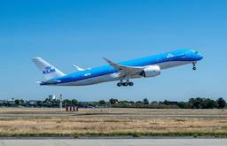
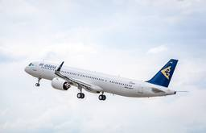
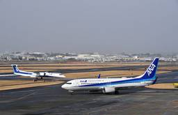
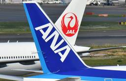
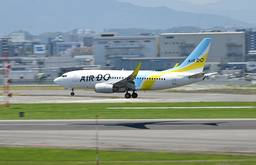
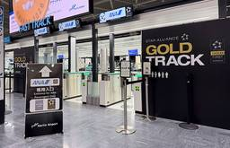

Aviation Wire
https://www.aviationwire.jp
航空経済紙「Aviation Wire」は、航空機やエアライン、空港、官公庁に関する情報や各種統計などをお届けして参ります。
フィード
ANA内定式、平澤社長「エアラインの原点は安全」初の10/1以外開催
Aviation Wire
全日本空輸（ANA/NH）は10月3日、2027年度に入社する新入社員の内定式を羽田空港近くにある総合訓練施設「ANA Blue Base（ABB、ANAブルーベース）」で開いた。内定式の出席予定者は昨年より284人少 […]
7時間前

KLM、A350初受領 777やA330置き換え
Aviation Wire
エアバスは現地時間10月2日、KLMオランダ航空（KLM/KL）が同社初のA350-900型機（3クラス331席）を受領したと発表した。就航は数週間後、アムステルダム・スキポール－トロント・ピアソン線が初便となる予定で […]
16時間前

エア・アスタナ、成田－アルマティ12/1就航 JALとコードシェア
Aviation Wire
カザフスタンのエア・アスタナ（KZR/KC）は10月2日、アルマティ－成田線を現地時間11月30日（日本時間12月1日）から週2往復で開設すると発表した。成田発の初便は12月1日。日本航空（JAL/JL、9201）とコ […]
1日前

ANAウイングス、機長経験者採用へ 11月末に受付サイト開設
Aviation Wire
ANAホールディングス（ANAHD、9202）傘下のANAウイングス（AKX/EH）は10月1日、運航乗務職掌（機長要員）の経験者採用を実施すると発表した。 対象機材はボーイング737型機、またはデ・ハビランド・カナ […]
1日前

JAL、ANAの株価逆転 SFC改定発表から4カ月半
Aviation Wire
ANAホールディングス（ANAHD、9202）傘下の全日本空輸（ANA/NH）が9月29日に発表した上級会員向けカード「ANAスーパーフライヤーズカード（SFC）」の再設計は、今週のANAをめぐる大きなニュースの一つと […]
1日前
JAL ABC、関空でスーツケース即日修理 キャスター交換・開錠も
Aviation Wire
日本航空（JAL/JL、9201）傘下の商社JALUX（ジャルックス）の100％子会社、JALエービーシー（JAL ABC）は10月1日、スーツケースの簡易修理・開錠の新サービスを関西空港で始めた。「ミスターミニット」 […]
1日前

エア・ドゥ、札幌－福岡を期間増便 年末年始・春休みは1日最大2往復に
Aviation Wire
エア・ドゥ（ADO/HD）は、冬ダイヤ（10月25日から27年3月27日）の札幌（新千歳）－福岡線を期間増便する。年末年始や春休みの特定日が対象で、26往復52便を増便する。同路線の定期便は1日1往復で、増便分を合わせ […]
1日前
JALとNX、747Fで北米－アジア貨物輸送 LA発成田経由の周回便
Aviation Wire
日本航空（JAL/JL、9201）と、日本通運を傘下に持つNIPPON EXPRESSホールディングス（NXHD、9147）の両社は10月1日、ボーイング747F貨物機を使ったアジア域内と北米－アジア間の貨物輸送提携を […]
1日前
スカイマーク、10月臨時便31便に 羽田－鹿児島など12便追加
Aviation Wire
スカイマーク（SKY/BC、9204）は10月1日、月内の羽田－札幌（新千歳）、鹿児島、那覇の3路線で臨時便を設定すると発表した。札幌線が2便、鹿児島線が4便、那覇線が6便の計12便で、発表済みを合わせると10月の臨時 […]
2日前

ANA SFC、スタアラゴールドはなぜ外れるのか 特集・「持つカード」の生きる道
Aviation Wire
ANAホールディングス（ANAHD、9202）傘下の全日本空輸（ANA/NH）が9月29日に示した上級会員向けカード「ANAスーパーフライヤーズカード（SFC）」の再設計では、ANAカードと「ANA Pay」の年間利用 […]
2日前